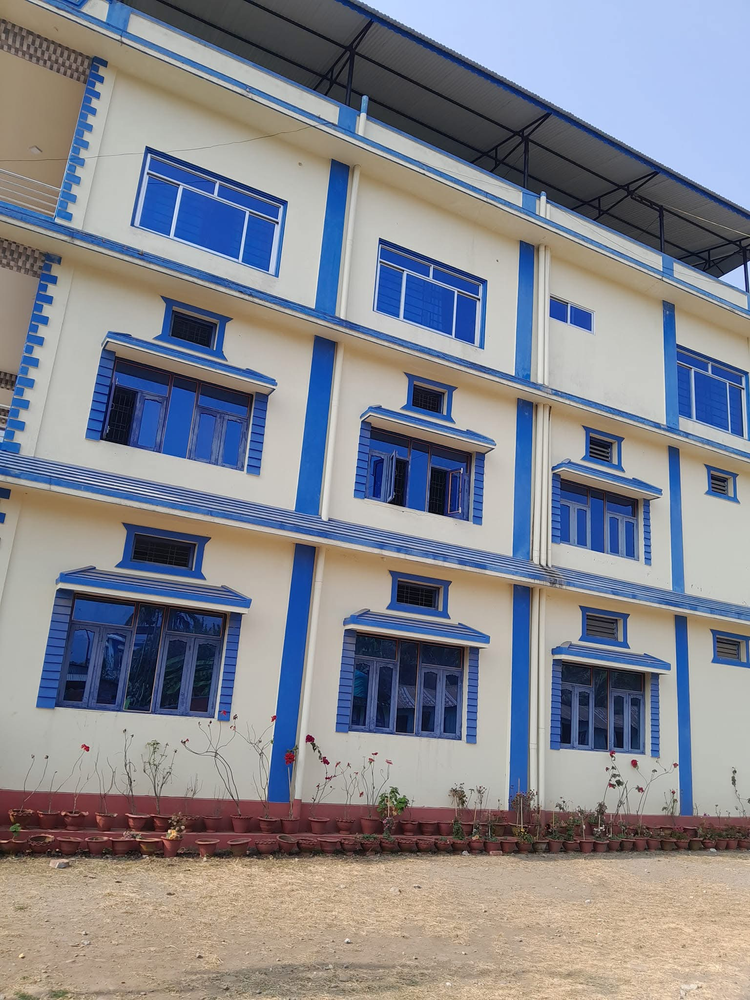
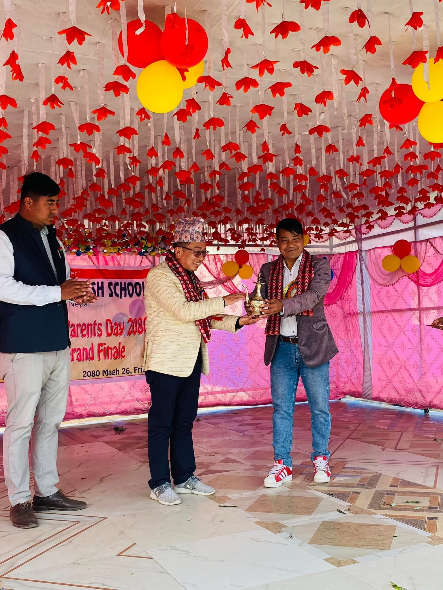

Experienced Faculty
Qualified teachers support personal growth, academic progress, and strong learning habits.
Public Central School offers supportive teaching, student-centered learning, and a welcoming campus environment from Early Childhood Development through Grade 10.
We combine modern learning resources with caring teachers and cultural values to help every child grow confidently.
Qualified teachers support personal growth, academic progress, and strong learning habits.
A secure school environment with clean classrooms, a library, and outdoor spaces for activity.
Students from diverse backgrounds learn together in a respectful, values-driven culture.
From ECD to Grade 10, our programs emphasize language skills, science, mathematics, and character development.
Joyful, play-based learning to develop language, social skills, and confidence.
Strong fundamentals in Nepali, English, mathematics, science, and values.
Preparation for board exams alongside critical thinking and academic excellence.
Our campus offers safe boarding, modern classrooms, and outdoor activities that build teamwork.

A bright and well-maintained campus with dedicated learning spaces for every age group.

Academic clubs, sports, and cultural events help students develop leadership and confidence.

Interactive classrooms, a library, and a computer lab support a modern education experience.